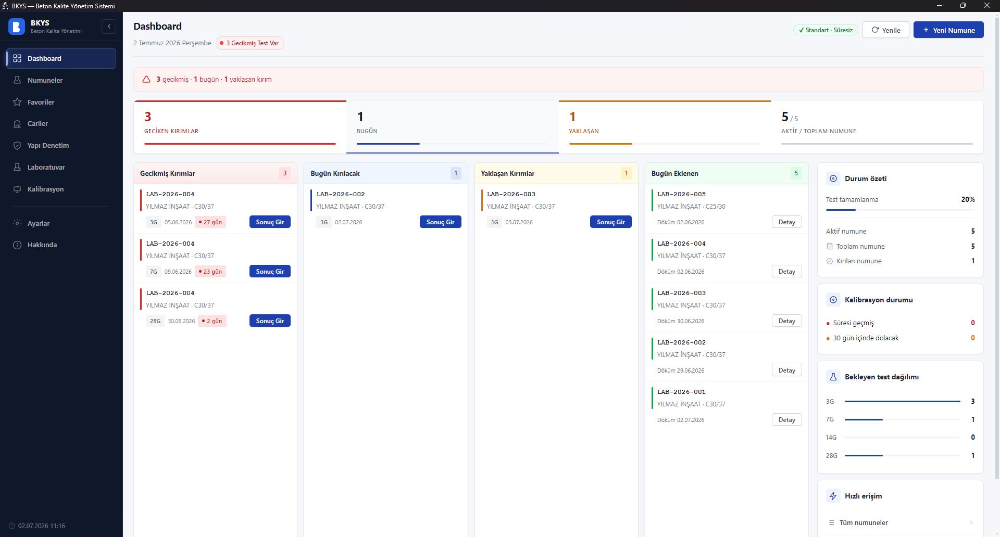
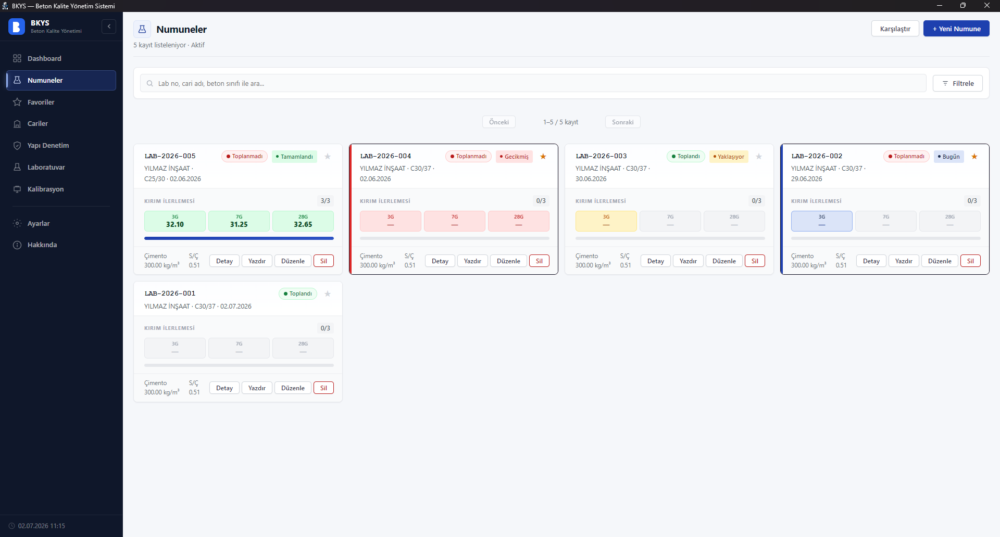
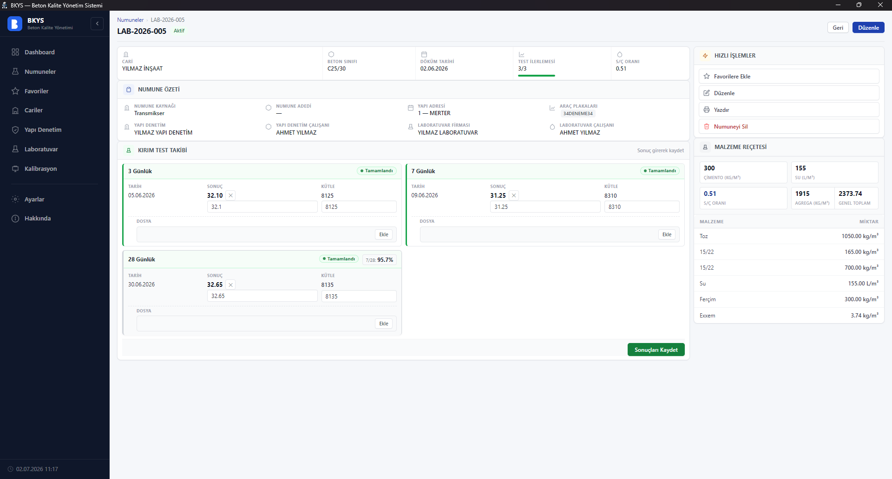
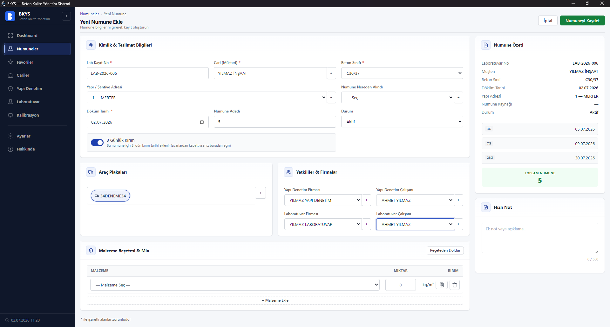
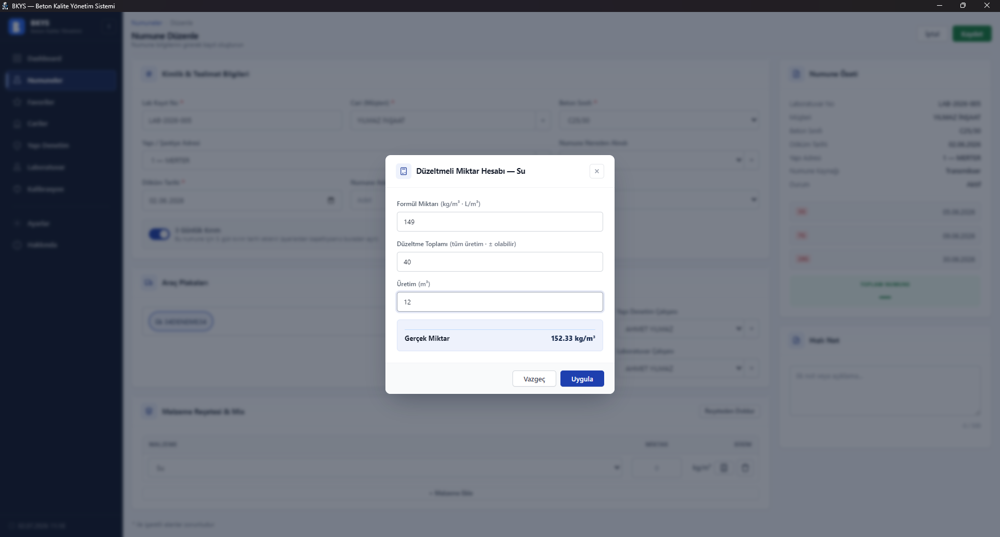
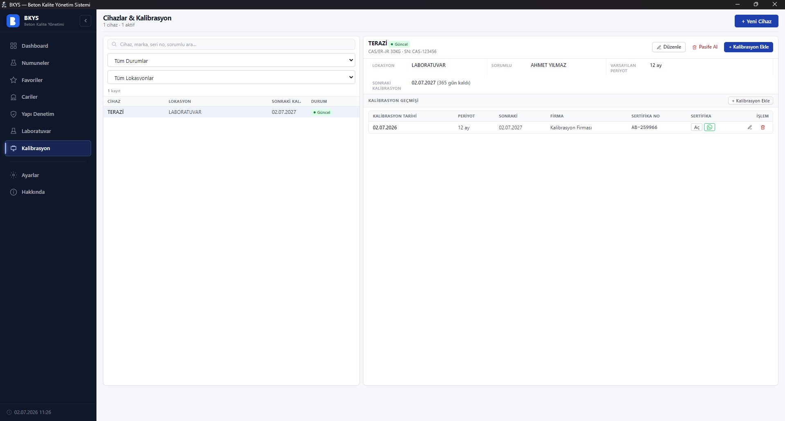
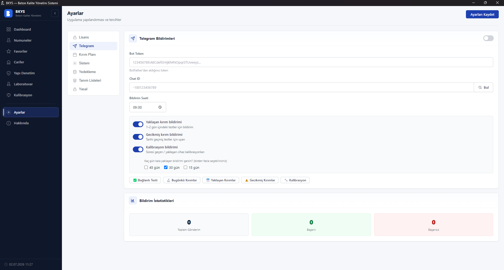
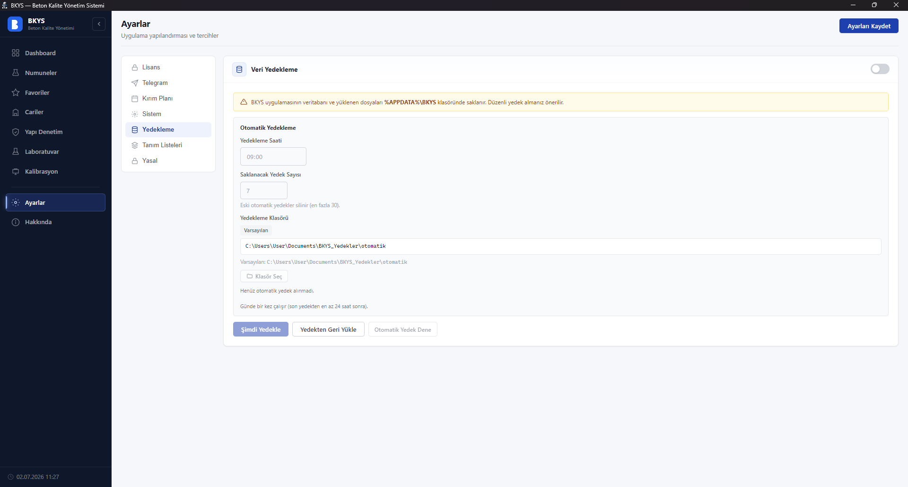

BKYS; hazır beton santralleri ve laboratuvarlar için numune kaydı, 3/7/14/28 günlük kırım takibi, reçete, kalibrasyon ve otomatik hatırlatmaları tek programda toplar.

Numune girişinden kırım hatırlatmasına, reçeteden kalibrasyona kadar tüm süreç yapılandırılmış ve hatasız.
Bugün kırılacak, yaklaşan ve geciken numuneler ile test tamamlanma oranları tek ekranda.
TS EN 206 mantığıyla numune kaydı, çoklu küp ortalaması, döküm ve kırım tarihleri.
Döküm tarihinden otomatik kırım planı. Hiçbir test tarihini kaçırmayın.
Kayıtlı reçeteler, malzeme kategorileri ve S/Ç oranı hesabı — tek tıkla doldurun.
Santral düzeltmesine göre (± olabilir) m³ başına gerçek malzeme miktarını anında hesaplayın.
Kalibrasyon geçmişi, sertifika kaydı ve yaklaşan kalibrasyon uyarıları.
Günün kırımları, gecikmeler ve kalibrasyon uyarıları telefonunuza düşer.
Numuneleri yan yana kıyaslayın, profesyonel PDF raporları tek tıkla alın.
Zamanlanmış yedek ve güncelleme öncesi güvenlik yedeğiyle verileriniz güvende.
Excel esnektir ama büyüdükçe formüller bozulur, tarihler unutulur ve veri kaybolur. BKYS bu işi yapılandırılmış, hatasız ve hatırlatmalı hâle getirir.
| İhtiyaç / Özellik | 📄 Excel | 🧱 BKYS |
|---|---|---|
| Kırım tarihleri (3/7/14/28 gün) | Elle hesap | Otomatik |
| Kırım hatırlatma / bildirim | ✕ Yok | ✓ Telegram |
| Reçete & düzeltmeli miktar hesabı | Elle formül | ✓ Dahili |
| Cihaz kalibrasyon takibi | ✕ Yok | ✓ Uyarılı |
| Numune karşılaştırma & PDF rapor | Elle uğraş | ✓ Tek tık |
| Veri güvenliği / yedekleme | Kayıp riski | ✓ Otomatik |
| Çok kişi kullanınca hata | Yüksek | Düşük |







Windows 10 / 11 için tek kurulum dosyası. Verileriniz kendi bilgisayarınızda kalır.
Demo, lisans ve teknik destek için bize ulaşın.